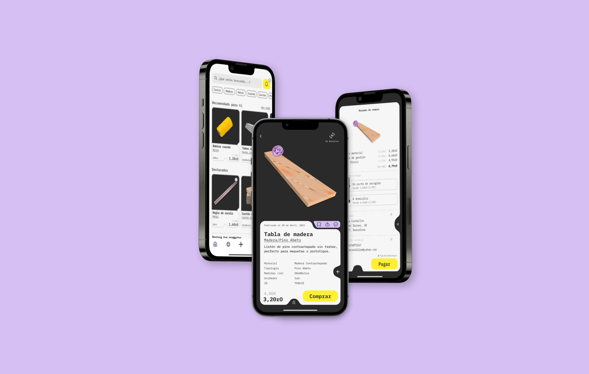
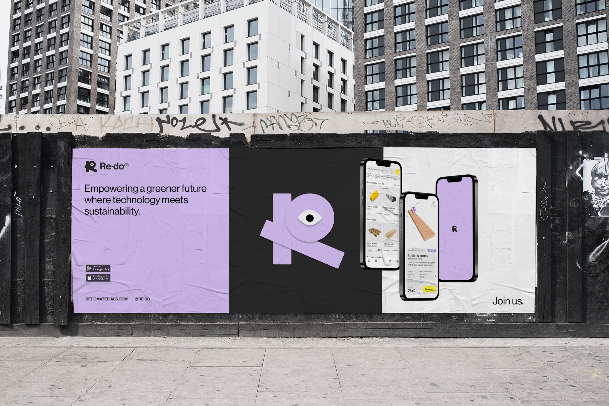
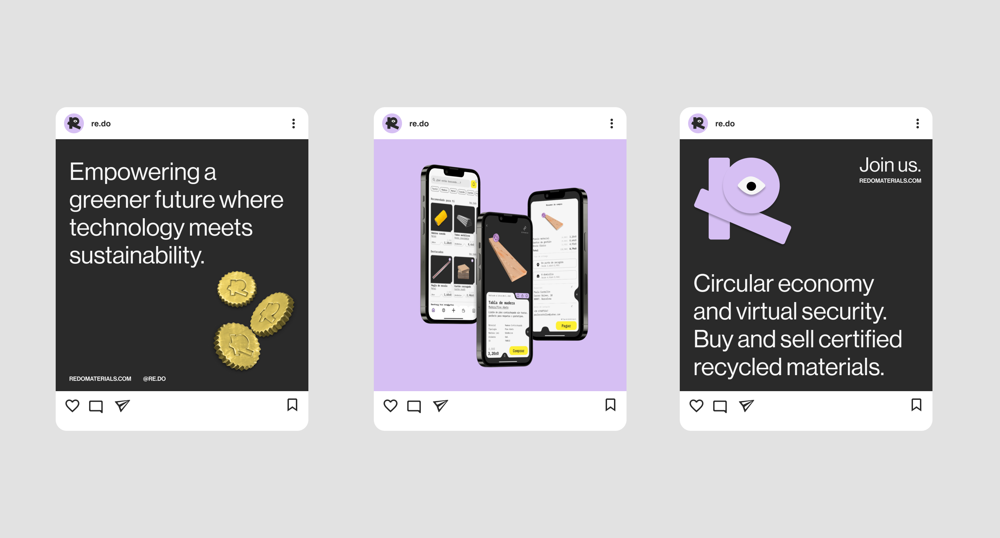
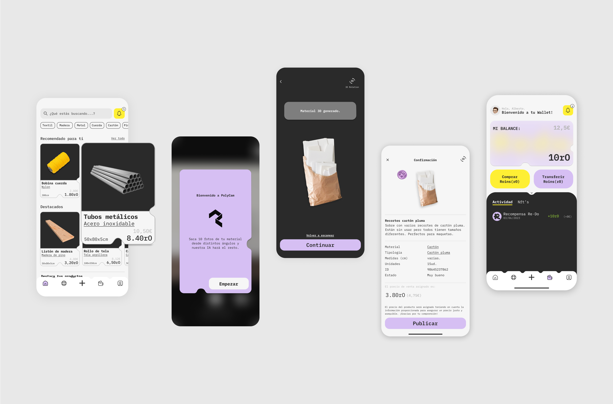
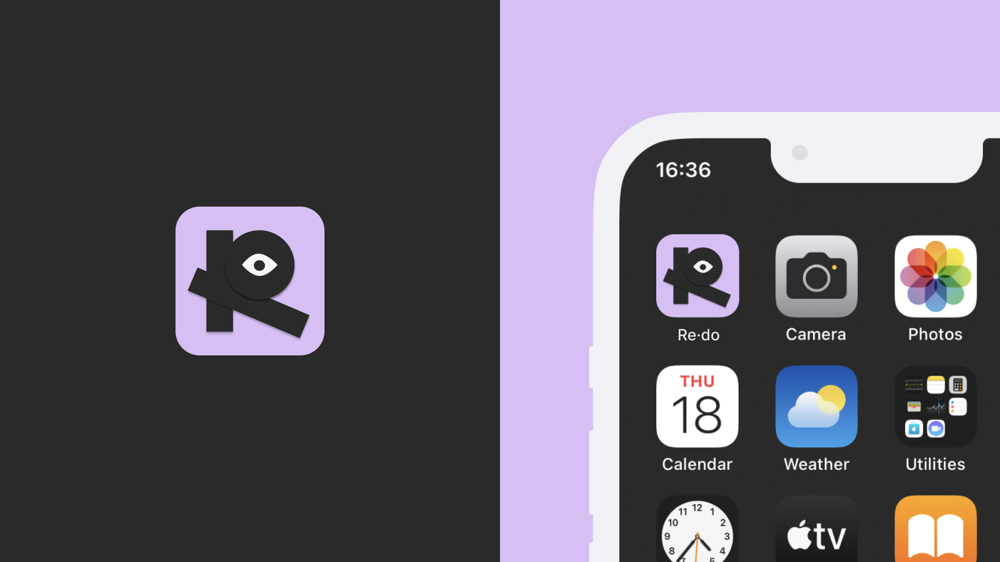
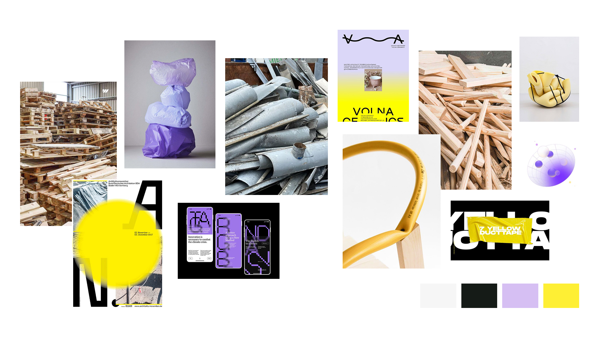
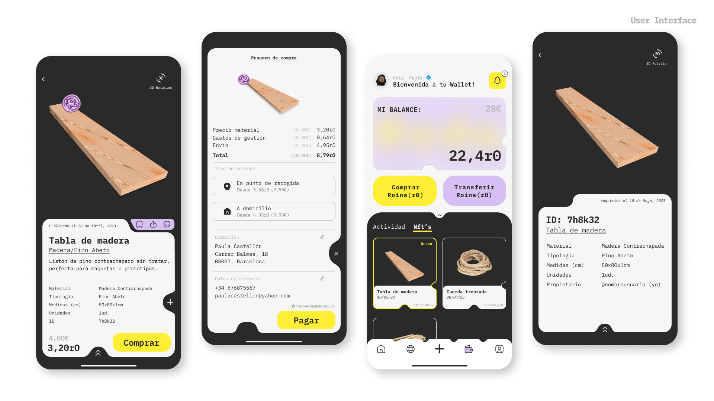

Re·do
Fighting waste in art and design industries
A digital marketplace designed to buy and sell unused and excess materials from the design and art industries. Powered by Web3 and blockchain technology, Re·do provides users with the ability to certify materials and verify their origins, ensuring that every item sold is 100% recycled or has been previously The platform enables quick, easy, and secure transactions through crypto wallets. This innovative project seamlessly blends sustainability with cutting-edge technology.
Problematic
The design and art industries generate substantial amounts of unused and excess materials, many of which are discarded despite being in perfect condition. This wasteful cycle contributes to environmental degradation and represents a missed opportunity for creatives seeking sustainable solutions. Additionally, there is often a lack of transparency regarding the origins of recycled materials, making it difficult for buyers to verify authenticity and quality. Traditional resale marketplaces also fail to cater specifically to the needs of designers and artists.
Re·do is set to transform the waste industry by making recycled materials more accessible through a cutting-edge, technology-driven approach. Through in-depth research and a clear understanding of industry challenges, we identified a significant market gap that shaped our vision and provided the foundation for developing an innovative digital solution.
Approach & solution
To ensure we built a solution that met the needs of designers and artists, we conducted extensive research, including industry benchmarks, user interviews, and sustainability studies. By analyzing existing marketplaces and speaking directly with creatives, we identified key pain points such as lack of material verification, basic transaction processes, and uninspiring marketplace aesthetics. These insights informed our strategic approach, shaping the core features and design principles of Re·do.
Results
- Successfully designed a fully functional marketplace tailored to the needs of designers and artists.
- Conducted in-depth research, including user interviews and market benchmarks, to validate the platform’s core features.
- Created low-fidelity mockups and a scalable UI system, ensuring an intuitive and engaging user experience.
- Highlighted the opportunity for reducing waste in the creative industry by enabling the reuse of surplus materials through a specialized marketplace.
Year
(202)
Tags
(Web design)
(Experimental Design)
(Video Editing)
(Social Impact)
In collaboration with
Deliar, Laith, Mahmoud, Mohammed, Najm, Nima, Payiz, Roohey & Trad
Links






